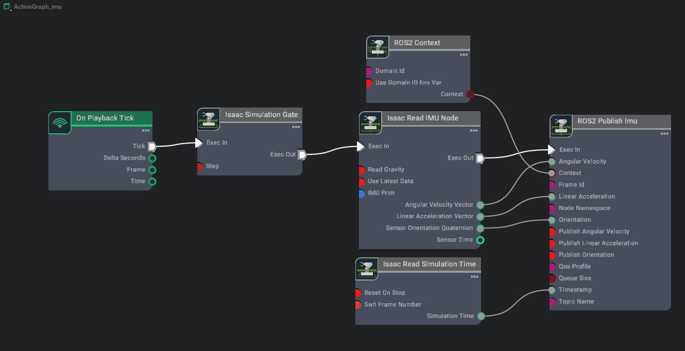

ROS 2 设置发布频率#
学习目标#
在本示例中，您将学习如何：
为同时发布到 ROS 2 的不同传感器类型（IMU、RTX Lidar、Camera）设置不同的发布频率。
在 Isaac Sim 中设置仿真帧率。
使用 Greenwave Monitor 检查最终的 ROS 2 发布频率。
入门指南#
先决条件
已完成 URDF 导入：Turtlebot、ROS 2 相机、RTX Lidar 传感器 和 ROS 2 变换树与里程计 教程。
已完成 ROS 2 安装，确保 ROS 2 可用且 ROS 2 扩展已启用。
构建并 source 了与您的 ROS 2 发行版匹配的 Isaac Sim ROS 工作空间。Humble 和 Jazzy 工作空间包含用于话题速率监控的 Greenwave Monitor。
使用 OmniGraph 设置发布频率#
Action Graphs 在每个仿真帧中都会被触发，因此 OmniGraph 节点与仿真频率的因子绑定。本教程介绍如何配置 ROS 2 节点以这些仿真频率因子进行发布。
非 RTX 传感器#
不依赖 RTX 渲染的传感器（例如 IMU 传感器）可以使用 Isaac Simulation Gate 节点配置为以不同于仿真频率的速率进行发布。
打开 turtlebot simple room 场景，该场景可通过前往 Isaac Sim Content browser 并点击 Isaac Sim>Samples>ROS2>Scenario>turtlebot_tutorial.usd 找到。
在 imu_link prim 下创建一个 IMU 传感器作为其子级。有两种添加 IMU 传感器的方法，它们会将传感器放置在 stage 中的不同位置：
右键菜单（推荐）：在 Stage 面板中，右键单击 prim
/World/turtlebot3_burger_processed/Geometry/base_footprint/base_link/imu_link，然后从上下文菜单中选择 Create > Isaac > Sensors > Imu Sensor。这会将传感器直接作为所选 imu_link prim 的子级。菜单栏：顶部菜单栏中的 Create > Sensors > Imu Sensor 选项会将传感器创建在 stage 根节点下。如果使用此路径，请在 Stage 面板中将生成的传感器 prim 拖拽到 imu_link 下，以确保层级结构与本教程其余部分保持一致。
无论使用哪种方法，在继续之前，请验证 Imu 传感器是否位于 imu_link prim 之下。
在 /World/turtlebot3_burger_processed/Geometry/base_footprint/base_link/imu_link prim 内创建一个新的 Action Graph，并将其命名为 ROS_IMU（该图的位置对于 自动 ROS 2 命名空间生成 非常重要）。为此，请选择位于
/World/turtlebot3_burger_processed/Geometry/base_footprint/base_link/imu_link的 prim，然后通过前往 Window > Graph Editors > Action Graph 来创建 Action Graph。创建包含仿真门节点的 IMU 图，并按下图所示连接该图。

按如下方式为每个节点设置属性：
在 Isaac Simulation Gate 节点的 Property 选项卡中：
将 step 属性设置为
2。步长设为2意味着下游节点将每隔一帧被触发一次。
在 Isaac Read IMU Node 节点的 Property 选项卡中：
将 IMU 传感器 prim
/World/turtlebot3_burger_processed/Geometry/base_footprint/base_link/imu_link/Imu_Sensor添加到其 imuPrim 输入字段中。
在 ROS2 Publish Imu 节点的 Property 选项卡中：
将 frameId 属性设置为
imu_link。这将与 TF 树中使用的imu_link坐标系相匹配，该坐标系已由您在 设置里程计 中创建的 TF 发布者发布。

RTX 传感器#
相机和 RTX Lidar 可以使用传感器 prim 上的 omni:sensor:tickRate 属性配置为以不同于仿真速率的频率发布数据，具体说明请参阅 配置每个传感器的 Tick 速率。
警告
旧版本的 Isaac Sim 使用 ROS 2 辅助节点上的 frameSkipCount 参数来控制传感器发布速率。该参数现已弃用。
如果将 frameSkipCount 设置为非零值，且对应的传感器 prim 将 omni:sensor:tickRate 设置为非零值，则消息发布频率可能会不符合预期，因为 frameSkipCount 可能与传感器的 tick 速率无法周期性对齐。有关完整的迁移指南，请参阅 配置每个传感器的 Tick 速率 和 多 Tick 渲染。
选择 2D Lidar prim
/World/turtlebot3_burger_processed/Geometry/base_footprint/base_link/base_scan/Example_Rotary_2D（即Isaac Create Render Product节点上引用为cameraPrim的OmniLidar，该节点馈送至/World/turtlebot3_burger_processed/Geometry/base_footprint/base_link/base_scan/ROS_LidarRTX/LaserScanPublish）。在 Property（属性）选项卡中：将
omni:sensor:tickRate设置为5。激光扫描每个 tick 发布一次，因此发布频率为R_lidar = 5Hz（与仿真频率无关，只要仿真频率至少为 5 Hz）。将
omni:sensor:Core:scanRateBaseHz设置为5以匹配。这两个值必须相等，以便 Lidar 每个 tick 累积一个完整扫描，而不是回退到每帧的部分扫描（参见 OmniLidar Tick Rate Must Equal scanRateBaseHz）。随附的Example_Rotary_2D资产默认值为10，因此必须将其降低。
由于本教程不需要发布点云，请选择用于点云的 Ros2RTXLidarHelper 节点，并通过取消勾选 /World/turtlebot3_burger_processed/Geometry/base_footprint/base_link/base_scan/ROS_LidarRTX/PointCloudPublish 中的 enabled 属性来禁用它。
打开相机 Action Graph /World/ActionGraph_camera。通过取消勾选 /World/ActionGraph_camera/isaac_create_render_product_01 中的 enabled 属性来禁用第二个相机渲染产品。
选择相机 prim
/World/Camera_1（即Isaac Create Render Product节点上引用的Camera，该节点同时馈送/World/ActionGraph_camera/ros2_camera_helper和/World/ActionGraph_camera/ros2_camera_info_helper）。应用OmniSensorAPIschema 并将omni:sensor:tickRate设置为15，以便/camera_1/rgb/image_raw和/camera_1/rgb/camera_info均以R_cam = 15Hz 的频率发布（独立于仿真速率，只要仿真速率至少为 15 Hz）。从Script Editor（Window > Script Editor）运行以下代码，以在每个相机上应用 schema 并设置频率：import isaacsim.core.experimental.utils.prim as prim_utils # Cameras created from the Create > Camera menu lack the OmniSensorAPI schema, # so omni:sensor:tickRate is unavailable until the schema is applied. Apply it to # each existing camera, then set the publish rate (Hz). for path in ("/World/Camera_1", "/World/Camera_2"): camera_prim = prim_utils.get_prim_at_path(path) camera_prim.ApplyAPI("OmniSensorAPI") camera_prim.GetAttribute("omni:sensor:tickRate").Set(15)
Note
通过顶部 Create > Camera 菜单栏创建的相机（如前置教程 ROS 2 Cameras 中所述）默认不包含
omni:sensor:tickRate属性，因为它们缺少OmniSensorAPIschema；随附的turtlebot_tutorial.usd已对/World/Camera_1和/World/Camera_2应用了该 schema。应用 schema 后，您也可以直接在 Property 选项卡中调整omni:sensor:tickRate。cameraPrim本教程不需要从 Camera1 发布深度图像。通过在 /World/ActionGraph_camera/ros2_camera_helper_02 中取消勾选 enabled 属性来禁用深度图像的相机辅助工具。
设置仿真速率#
在设置好传感器图表和各传感器的 tick 速率后，设置场景本身的运行速率。仿真速率限制了每个由 OmniGraph 驱动的发布者，并决定了你在下一节中测量到的挂钟时间速率。
Isaac Sim 有三个与速率相关的时钟：物理场景的步进速率（UsdPhysicsScene.timeStepsPerSecond）、时间轴每个 tick 的 dt（stage.timeCodesPerSecond 结合时间轴的 targetFramerate），以及应用程序运行循环的 tick 速率（/app/runLoops/main/rateLimitFrequency）。为了实现实时播放，你需要将这三个时钟一致地设置为相同的值。isaacsim.core.simulation_manager.SimulationManager.setup_simulation() 配置物理场景的步进速率；isaacsim.core.rendering_manager.RenderingManager.set_dt() 同时配置时间轴和运行循环。请将它们配对使用。
在按下 Play 之前，从 Script Editor（Window > Script Editor）运行以下代码片段。根据下表将 target_hz 设置为你想要的速率。
from isaacsim.core.rendering_manager import RenderingManager
from isaacsim.core.simulation_manager import SimulationManager
# Set physics, timeline, and run-loop rates coherently before pressing Play.
# Assumes `/app/runLoops/main/rateLimitEnabled` is true (default in the full
# Isaac Sim GUI app; false in `isaacsim.exp.base.kit` / standalone Python). If
# it is false, set it to True first or the loop will tick unthrottled. See the
# `RenderingManager.set_dt` docstring for the full effect list.
target_hz = 60
SimulationManager.setup_simulation(dt=1.0 / target_hz) # physics_dt
RenderingManager.set_dt(1.0 / target_hz) # loop_dt, manual mode, timeCodesPerSecond, targetFramerate
使用默认的 target_hz = 60，仿真以每挂钟秒 60 帧（FPS）的速度运行。
每个主题随 target_hz 的缩放方式不同，因为这些主题受两种不同机制的门控。
由 OnPlaybackTick 驱动的辅助程序（
/clock发布者以及通过其 Isaac Simulation Gate 的 IMU 图）每次应用更新时触发一次，因此它们的挂钟时间速率随target_hz线性缩放（对于 IMU，需除以门控step）。多刻度调度的 RTX 传感器 (
/scan,/camera_1/rgb/image_raw,/camera_1/rgb/camera_info) 在渲染器的仿真时间推进了1 / omni:sensor:tickRate时触发，因此它们以配置的 Hz 频率保持运行，独立于target_hz- 直到target_hz降至配置的刻度率以下，此时传感器的刻度率被限制为每次应用更新一次。有关底层机制，请参阅 架构：时间线、物理和渲染器。
对于教程设置（Lidar prim 上的 R_lidar = omni:sensor:tickRate = 5，Camera prim 上的 R_cam = omni:sensor:tickRate = 15，IMU 门控 step = 2），挂钟发布速率为：
|
|
|
|
|
|---|---|---|---|---|
30 |
30 |
15 |
5 |
15 |
60 |
60 |
30 |
5 |
15 |
120 |
120 |
60 |
5 |
15 |
240 |
240 |
120 |
5 |
15 |
10 |
10 |
5 |
5 |
10（限制为 |
发布速率是估算值。在高性能机器上，最大 FPS 将更接近上述代码片段中设置的 target_hz（默认值为 60 Hz）。检查 ROS 2 发布速率 展示了如何测量实际获得的速率并将其与此表进行比较。
重要
实际帧率取决于您机器的性能。如果渲染器无法维持 target_hz，传感器发布速率将按比例下降。有关三个时钟之间的关系以及它们不同步时会发生什么（慢动作、快进），请参阅 架构：时间线、物理和渲染器。
通用公式如下：
clock_hz = target_hz
imu_hz = target_hz / k_imu # k_imu = Isaac Simulation Gate step (= 2 here)
scan_hz = min(R_lidar, target_hz)
camera_hz = min(R_cam, target_hz)
注意
/camera_1/rgb/image_raw（以及 /camera_1/rgb/camera_info）的发布速率可能会低于表格中的预测值，即使多刻度调度器正以配置的 R_cam Hz 频率触发。RGB 图像路径的计算开销比其他主题更大：渲染产品的成本随分辨率增加而上升，且发布的图像大小也会给 DDS / 网络层带来压力。如果观测到的速率低于 R_cam，建议首先尝试以下两项调整：(1) 在 /World/ActionGraph_camera/isaac_create_render_product 上降低渲染产品的分辨率，以及 (2) 在 /World/Camera_1 prim 上降低 omni:sensor:tickRate 以减少渲染频率。
注意
如果更改了 Lidar prim 上的 omni:sensor:tickRate，则必须相应更改 omni:sensor:Core:scanRateBaseHz 以保持一致。这两个值必须相等，否则 Lidar 会在每帧发出部分扫描，而不是每个刻度累积一次完整扫描；请参阅 OmniLidar Tick Rate Must Equal scanRateBaseHz。
检查 ROS 2 发布速率#
按 Play 启动仿真。如果更改了
target_hz，请重新运行 Setting the Simulation Rate 中的代码片段，然后再次按 Play 进行测量。在单独的已加载 ROS 2 环境的终端中，通过单个进程为所有教程主题运行 Greenwave Monitor。对于 Windows 上的 Pixi 工作流，请在与您的发行版匹配的 ROS 工作区目录中运行相同的命令，例如 Jazzy 使用
jazzy_ws或 Humble 使用humble_ws，并带有pixi run或先输入pixi shell：ros2 run greenwave_monitor greenwave_monitor --ros-args \ -p gw_monitored_topics:='["/clock","/imu","/scan","/camera_1/rgb/image_raw","/camera_1/rgb/camera_info"]' \ -p gw_time_check_preset:=nodetime_only
此模式是 Greenwave 中最接近实时
ros2 topic hz检查的等效功能，因为它在 Greenwave 节点处测量消息到达间隔。Greenwave 还会在/diagnostics上发布结果。使用 Pixi 时，请在命令前加上pixi run，例如pixi run ros2 run greenwave_monitor greenwave_monitor --ros-args ...。Greenwave 还可以将主题与预期频率进行比较，这对于仪表板检查非常有用。
greenwave_monitor节点在启动后会发布/greenwave_monitor/set_expected_frequency服务。 Isaac Sim 不会发布此服务，因此在 Greenwave Monitor 运行之前，该服务不会出现在ros2 service list中。保持
greenwave_monitor命令运行。然后，在另一个已加载 ROS 2 环境的终端中，使用以下命令为默认的target_hz = 60设置预期 IMU 频率：ros2 service call /greenwave_monitor/set_expected_frequency greenwave_monitor_interfaces/srv/SetExpectedFrequency \ "{topic_name: '/imu', expected_hz: 30.0, tolerance_percent: 10.0, clear_expected: false, add_topic_if_missing: true}"
该服务调用配置预期频率。在 Greenwave 仪表板中检查测量频率是否在容差范围内。在另一个已加载 ROS 2 环境的终端中，运行：
ros2 run greenwave_monitor ncurses_dashboard --hide-unmonitored --ros-args \ -p gw_monitored_topics:='["/clock","/imu","/scan","/camera_1/rgb/image_raw","/camera_1/rgb/camera_info"]' \ -p gw_time_check_preset:=nodetime_only
如果您的 Windows Pixi 终端不支持 ncurses 前端，请使用上述非仪表板
greenwave_monitor命令来监控测量到的发布频率，而无需进行仪表板检查。如果您的终端中不可用 Greenwave，则
ros2 topic hz /topic_name仍然是每次监控一个主题的轻量级替代方案。将实测速率与设置仿真速率中的表格进行对比。这些话题分为两类，它们随
target_hz的缩放方式不同：由 OnPlaybackTick 驱动的发布者（受应用更新门控）：
/clock：
target_hz（默认约 60 Hz；每次应用更新发送一条消息）。/imu：
target_hz / k_imu（默认约 30 Hz；k_imu = 2是您之前设置的 Isaac Simulation Gate 步长）。
多刻度调度的 RTX 传感器（受
/ExternalSimulationTime和每个传感器的omni:sensor:tickRate门控，当仿真以实时模式运行时——即使用了设置仿真速率中的代码片段）：/scan：
min(R_lidar, target_hz) = 5Hz（在target_hz中保持恒定，只要target_hz >= 5）。/camera_1/rgb/image_raw：
min(R_cam, target_hz) = 15Hz（在target_hz中保持恒定，只要target_hz >= 15）。/camera_1/rgb/camera_info：与 RGB 相同，因为这两个辅助工具共享同一个 Camera prim 的 tick 速率。
包含本教程所有步骤的文件可以通过前往 Isaac Sim Content 浏览器并点击 Isaac Sim>Samples>ROS2>Scenario>turtlebot_tutorial_multi_sensor_publish_rates.usd 来打开。打开文件后，请记住运行设置仿真速率中的代码片段以设置目标仿真速率。
注意
如果您观察到 /camera_1/rgb/image_raw 话题的发布速率低于预期，这可能是因为每条图像消息的大小较大，导致网络流量或 DDS 队列管理出现瓶颈。为了提高发布速率，您可以尝试减小渲染产品分辨率的尺寸。这可以通过前往附加到图像发布器 /World/ActionGraph_camera/isaac_create_render_product 的渲染产品节点，并在重放场景之前修改尺寸来实现。
故障排除#
如果观察到的发布速率与目标仿真帧率差异很大，请尝试以下操作：
尝试使用出厂设置运行 Isaac Sim，以清除任何持久化的仿真帧率设置：
./isaac-sim.sh --reset-user检查计算机的 CPU 使用率以识别瓶颈。如果 Isaac Sim 表现出极高的使用率，请尝试启用 Fabric 运行：
./isaac-sim.fabric.sh --reset-user重要
上述命令处于实验阶段，并非 Isaac Sim 的所有功能都受支持。不过，您可能会观察到更好的整体性能。您只需在首次使用 Fabric 运行时使用
--reset-user标志。
传感器速率计算器#
现在您已经了解了仿真速率、传感器 tick 速率和 RTF 之间的相互作用，请使用下方的计算器来估算您自己的传感器配置的预期挂钟发布速率。
对于使用多 tick 调度器的 RTX 传感器，预期的挂钟发布速率取决于三个值：
应用 FPS (
app_fps)：实际达到的应用更新速率， 在视口中通过 (眼睛图标) > Heads Up Display > FPS 显示。/app/runLoops/main/rateLimitFrequency会限制isaacsim.sh工作流的速率（独立 Python 脚本默认不受限制）。 请参阅 设置仿真速率 以设置仿真速率。传感器 tick 速率 (
omni:sensor:tickRate)：在传感器 prim 上配置的每个传感器的调度速率。实时因子 (RTF)：仿真时间与挂钟经过时间的比率。要读取实时仿真的 RTF，请遵循 ROS 2 发布实时因子 (RTF) 教程。
估计的挂钟发布速率为：
publish_rate = min(RTF × sensor_tick_rate, app_fps)
使用下方的计算器估算您的传感器配置的预期发布速率。
应用 FPS (app_fps) |
帧/秒 |
传感器 tick 速率 (omni:sensor:tickRate) |
赫兹 |
| 实时因子 (RTF) |
估计发布速率：15.00 Hz （受 tick-rate 限制）
警告
上述结果是理论上限。由于以下原因，实际观测到的速率可能会更低：
渲染开销：高分辨率的渲染输出会增加每帧的 GPU 时间，导致
app_fps低于其配置的目标值。DDS 和网络开销：高分辨率 RGB 图像等大数据量消息可能会使 DDS 队列或网络带宽饱和，导致发布消息丢失或延迟。
RTF 波动：RTF 在运行过程中可能会波动。请使用 ROS 2 发布实时因子 (RTF) 教程来监控实时值，如果该值发生显著变化，请重新运行计算。
注意
本教程建议使用 Greenwave Monitor，因为它可以在单个进程中监控多个
主题，发布 ROS 诊断信息，并为每个主题附加预期速率检查。ros2 topic hz 仍然适用于快速检查，但在消息大小较大时（例如高分辨率相机图像），它可能会低估真实的发布速率。
总结#
本教程涵盖了：
为不同传感器类型设置不同的发布频率：为非 RTX 传感器（IMU）使用 Isaac Simulation Gate，在 RTX 传感器（Lidar、Camera）的传感器 prim 上使用
omni:sensor:tickRate。使用 Script Editor 中的
SimulationManager.setup_simulation和RenderingManager.set_dt设置一致的仿真频率。使用 Greenwave Monitor 作为
ros2 topic hz的多主题替代方案，并为教程主题设置预期频率诊断。使用 Sensor Rate Calculator，根据目标 FPS、传感器 tick 频率和 RTF 估算预期的墙钟发布频率。
后续步骤#
请继续学习 ROS 2 教程系列中的下一篇教程 ROS 2 Putting It All Together，以构建完整的 ROS 2 导航工作流。